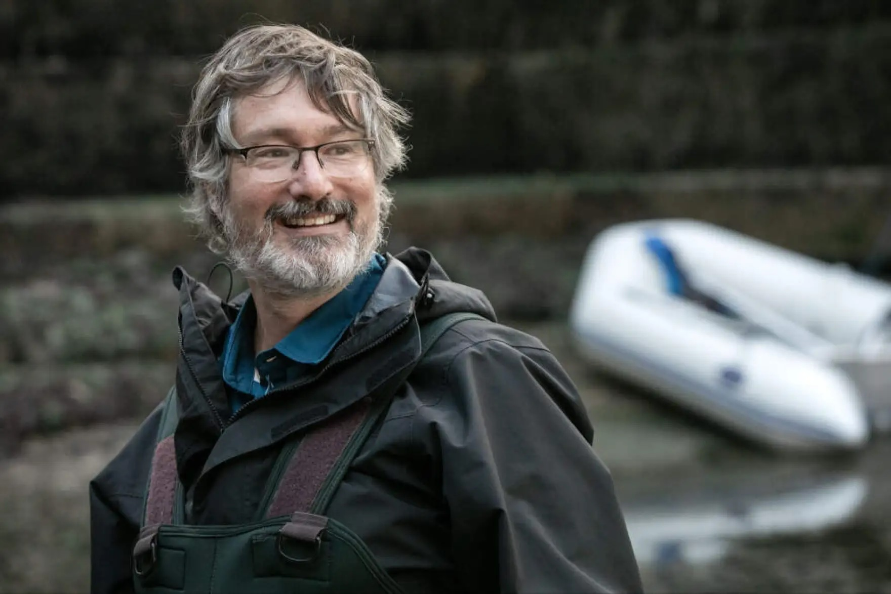
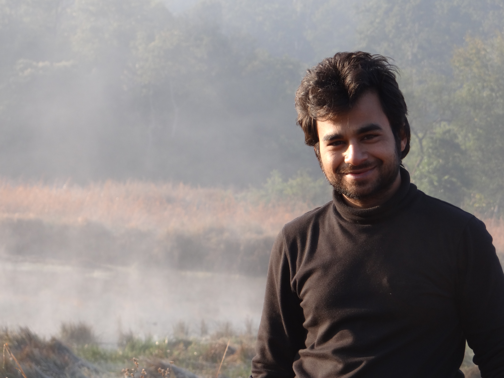
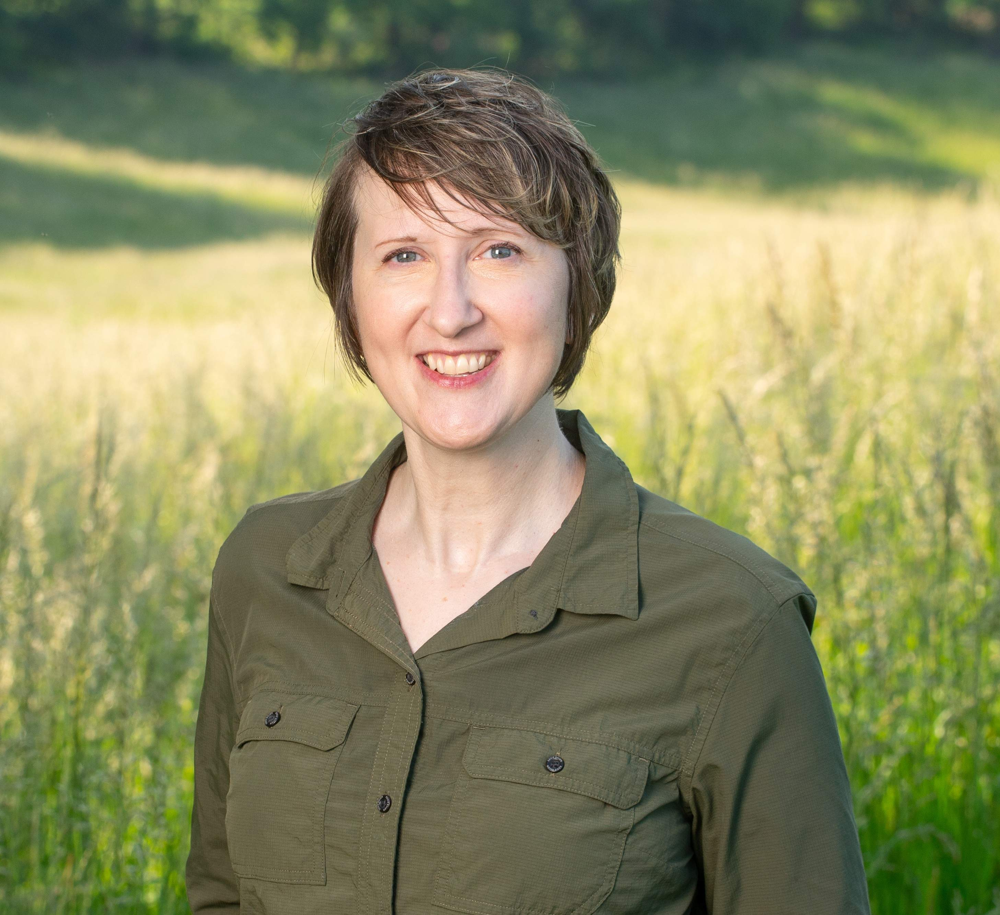
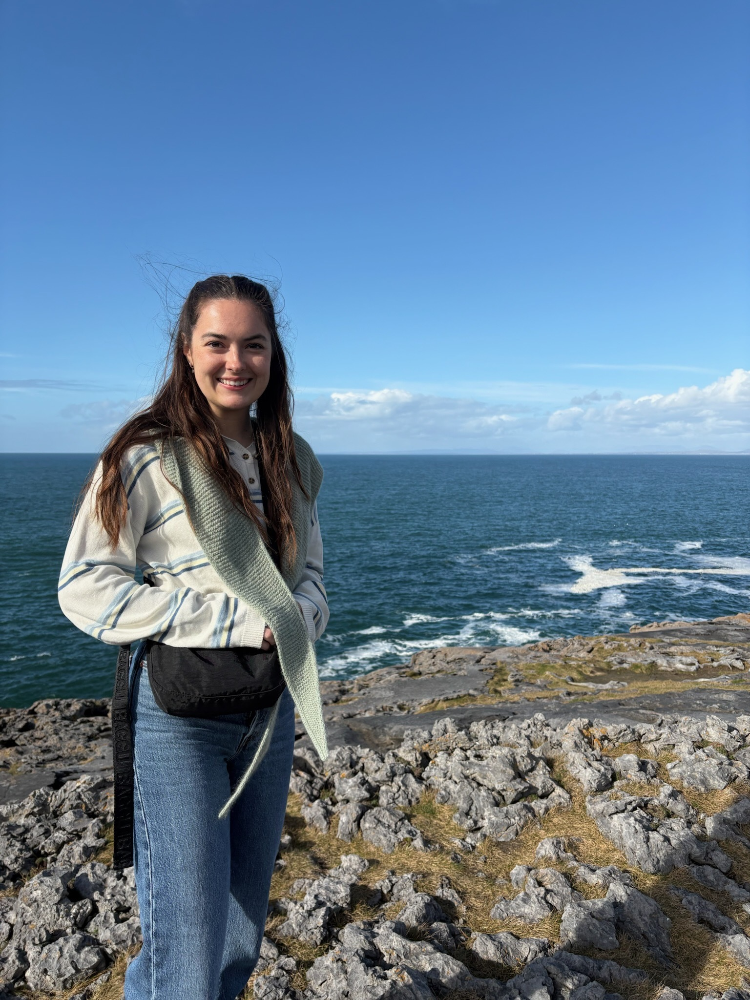
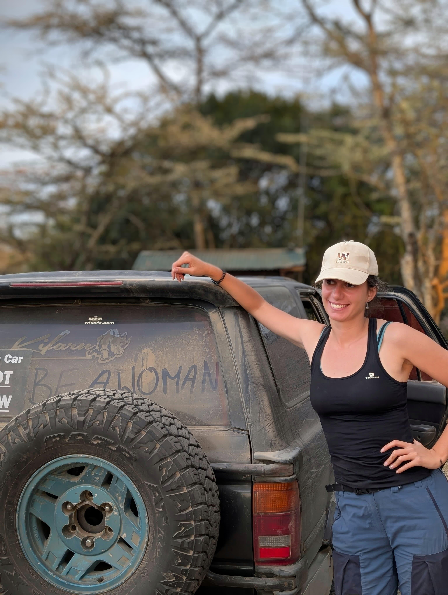
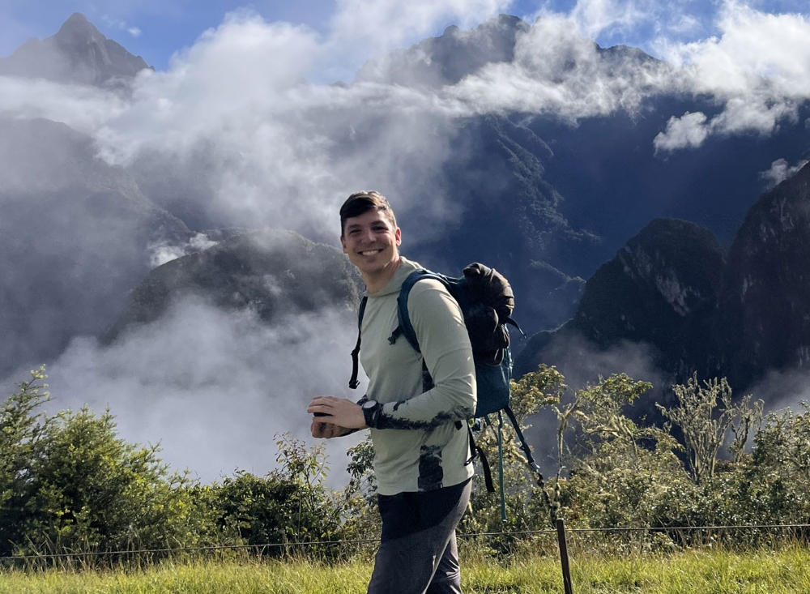
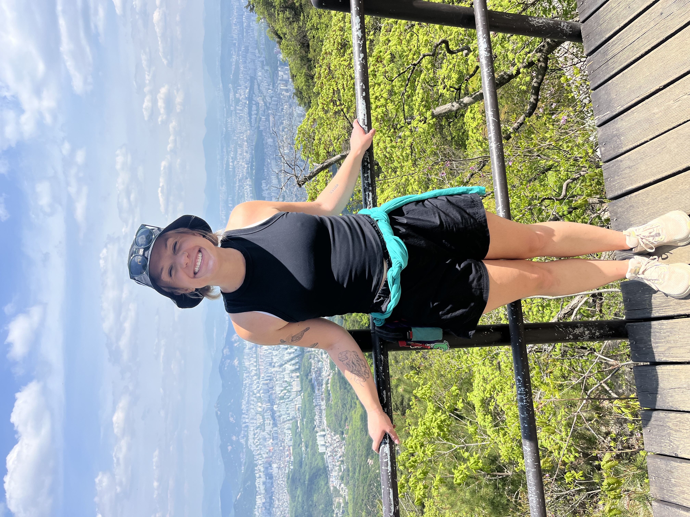
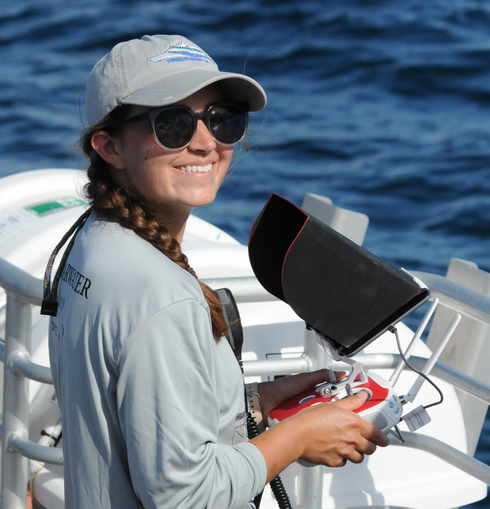
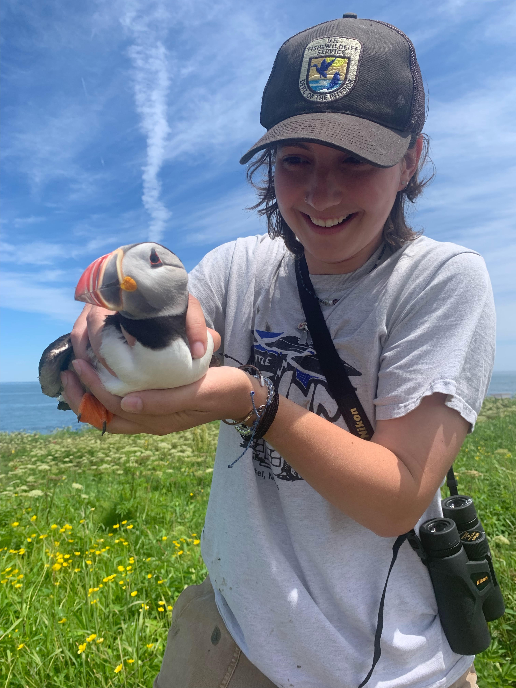

Students 2027

Students by year: 2022 | 2023 | 2025 | 2026 | 2027
Meet the CV4Ecology 2027 participants. Profile information is shown for participants who have submitted it; additional profiles will be added when available.
Participant profiles

Jarrett Byrnes
University of Massachusetts Boston
Jarrett Byrnes is a marine community ecologist focused on the causes and consequences of biodiversity for coastal ecosystems. He works as an associate professor of in the Department of Biology at the University of Massachusetts Boston. His research spans scales from small-scale experimentation to large-scale analysis of remote sensing data. He conducts much of his work in the coastal ecosystems of the Gulf of Maine. There, he studies the ecology of urban coastal ecosystems with the Stone Living Lab as well as kelp forests from Long Island to Canada to the entire globe. He's been diving and working in New England marine ecosystems since he was in college. He keeps coming back to these systems think about the natural beauty and fascinating stories the ocean tells us if we just look and listen hard enough.
Project: As part of CV4Ecology 2027, Jarrett plans to work on developing computer vision models for the Stone Living Lab Living Seawalls project. Currently, this project consists of three seawalls around Boston that have been augmented with biologically inspired panels in order to facilitate coastal intertidal organisms in areas they might not otherwise have been found. The idea is to turn a win for humans trying to protect their urban shorelines into a win-win for people and nature. Monitoring what grows on these Living Seawalls is crucial to evaluating their success. This currently requires a lot of human effort. If we are to scale up Living Seawalls, we need a more efficient method of assessing biodiversity at scale and with speed for decision making. Hence, computer vision as a natural solution to the problem of larger-scale monitoring of Living Seawalls.

Urjit Bhatt
Wildlife Institute of India, Dehradun, Uttarakhand, India
I am a Project Scientist at the Wildlife Institute of India, where I work on the ecology, monitoring, and conservation of small wild cats and their habitats across the Dudhwa and Pakke–Eaglenest landscapes in India. I hold a PhD in Wildlife Science, with research focused on habitat use and interactions among mammalian carnivores in the tropical forests of Northeast India. My research interests include carnivore ecology, species interactions, camera-trap monitoring, and biodiversity conservation. I am particularly interested in applying computer vision and AI-based approaches to improve wildlife monitoring and ecological research.
Project: My project explores computer vision techniques to improve monitoring of elusive carnivores using large camera-trap datasets from Northeast India and the Himalayan region. Drawing on more than 350,000 camera-trap images collected across diverse forest ecosystems, I aim to develop and evaluate AI-assisted approaches for automated species identification, image filtering, false-trigger removal, and individual recognition. I also plan to explore how these approaches can help extract ecological information on animal activity patterns and species interactions. The overall goal is to make camera-trap data processing more efficient and support large-scale biodiversity monitoring and carnivore conservation.

Sarah E. Huebner
Smithsonian National Zoo & Conservation Biology Institute
Dr. Sarah E. Huebner is a Wildlife Ecologist and the Digital Curator of SmithsonianWILD, a collection of wildlife imagery designed to support ecological research, artificial intelligence development, and global conservation efforts. Her research focuses on developing practical, scalable approaches to understanding and protecting wild mammal populations. She uses long-term, standardized wildlife monitoring to evaluate changes in species distributions, population demographics, community composition, habitat use, and responses to anthropogenic disturbance, with an emphasis on translating ecological data into information that can directly support conservation decision-making.
Project: My project asks whether computer vision models can learn to distinguish interaction subtypes — predator/prey, agonistic, affiliative, or mutualistic — across phylogenetically and biogeographically distant species without species-specific training data. I will test whether visual features of interaction subtypes cluster consistently across African and North American mammal communities, and whether models trained on one continent's data generalize to the other using data collected by arrays of camera traps.

Neus Perez
University of Cádiz
I work in underwater acoustics at the Marine Research Institute (INMAR), University of Cádiz, Spain. My background in Marine Sciences and Acoustic Engineering has led me to combine passive acoustic monitoring, soundscape analysis, and underwater noise assessment to investigate biological activity and human pressures in marine environments. My experience spans cetacean research, acoustic consultancy, and coastal habitat monitoring. I am particularly interested in combining bioacoustics and machine learning to turn long-term underwater recordings into interpretable information for conservation. One of the projects I am currently involved in is Posidonia Soundscapes: Conservation & Music, Ibiza, where I study the acoustic dynamics of Mediterranean seagrass meadows. The project also connects underwater sound with music and outreach, bringing marine science to wider audiences.
Project: Can listening to seagrass meadows help us understand their ecological condition and exposure to human disturbance? My project explores this question through underwater recordings from Posidonia oceanica meadows in Ibiza and Formentera, spanning sites with contrasting human pressures. During CV4Ecology 2027, I aim to develop and evaluate a computer vision workflow to identify biological sounds and vessel noise in acoustic spectrograms, including overlapping events. A central challenge is preserving absolute frequency information: a signal’s position on the frequency axis can be essential to interpreting its acoustic identity. Using manually annotated recordings, I will investigate frequency-aware approaches to move beyond single-sound detection towards multi-class soundscape monitoring. The longer-term goal is to use underwater soundscapes as potential indicators of the ecological condition of Posidonia oceanica meadows to inform conservation efforts.

Lauren Baggett
Scripps Institution of Oceanography
I am a Research Data Analyst at Scripps Institution of Oceanography in the Scripps Acoustic Ecology Lab. My research focuses on using underwater acoustics to investigate the behavior and ecology of marine mammals, particularly elusive, deep-diving species. I combine passive and active acoustic methods, acoustic localization, signal processing, and machine learning to study whale diving behavior, predator-prey interactions, and underwater soundscapes. I am particularly interested in developing computational methods and tools to better understand marine ecosystems that are difficult to observe directly. I also enjoy mentoring students and making quantitative research methods more accessible to other scientists. Outside of research, I enjoy knitting and playing the oboe.
Project: Marine mammals are important predators in ocean ecosystems, and changes in their behavior and distribution can provide valuable insight into ecosystem health. Because many marine mammals rely on sound to navigate, communicate, and find food, underwater noise from human activities can disrupt these behaviors. Understanding these impacts requires accurately characterizing anthropogenic sound in the marine environment. My project aims to use computer vision to automatically detect and classify sonar signals from spectrograms, which are visual representations of sound. My dataset contains a wide variety of sonar signal types, some of which are not yet well characterized. At the CV4Ecology workshop, I am excited to explore machine learning approaches that can identify and classify meaningful signal categories to ultimately improve our understanding of anthropogenic sound exposure and its impacts on marine ecosystems.

Camila Batista Vieira
Mamirauá Institute for Sustainable Development
I am an ecologist with a degree in Biological Sciences (Teaching Licensure) from the State University of Amazonas (UEA), a Master’s degree in Freshwater Biology and Inland Fisheries from the National Institute of Amazonian Research (INPA), and a Ph.D. in Ecology and Biodiversity from São Paulo State University (UNESP). Throughout my academic career, I have been dedicated to understanding how Amazonian biodiversity responds to environmental change. My research focuses on biodiversity monitoring, community and metacommunity ecology, and the assessment of environmental impacts on ecosystems, seeking to integrate science, technology, and decision-making to strengthen conservation strategies in the Amazon. Currently, I am an Ecoacoustics Researcher with the Providence Project at the Mamirauá Institute for Sustainable Development, where I develop studies on the use of soundscapes, artificial intelligence, and computational methods for automated biodiversity monitoring and large-scale environmental assessment of Amazonian ecosystems.
Project: My project investigates the acoustic ecology of cicadas in the Amazon using passive acoustic monitoring, computer vision, and artificial intelligence. The goal is to develop automated classifiers capable of detecting species at large scales and analyzing how patterns of distribution, behavior, and community organization vary across space and time in response to environmental change. By integrating acoustic data with ecological theory, the study aims to understand community dynamics, assess the resilience of Amazonian ecosystems, and provide scientific support for identifying priority areas for biodiversity conservation.

Lidiane Gomes
Instituto de Desenvolvimento Sustentável Mamirauá
I am a researcher at the Mamirauá Institute for Sustainable Development, with a PhD in Ecology and Biodiversity Conservation and a Master's degree in Zoology. My research focuses on bioacoustics and ecoacoustics, particularly the use of acoustic data for species identification, biodiversity monitoring, and assessing the impacts of human activities on natural soundscapes.
I am currently working on advancing automated biodiversity monitoring technologies in the Amazon. My primary interest is integrating ecological and computational approaches to develop methods for acoustic species identification, enabling large-scale biodiversity monitoring and supporting conservation efforts across the Amazon.
Project: My project aims to develop an automated acoustic classification method to identify Amazonian bat species using computational ecology approaches. One of the main challenges is distinguishing between species with similar echolocation calls while accounting for geographic variation in their acoustic characteristics. The results are expected to contribute to large-scale biodiversity monitoring and advance automated acoustic analysis tools for bat conservation in the Amazon.

Elena Iannino
Max Planck Institute of Animal Behavior
Hi! I'm Elena, a PhD candidate in behavioral ecology, working on carnivore ecology and predator–prey interactions. My research uses thermal drones and GPS collars to study fine-scale lion behavior in African savannas. I trained as a wildlife biologist in Italy (BSc) and Norway (MSc), and I’ve since worked with a wide range of herbivore and carnivore species, collecting data across Europe, Asia and Africa, using methods from camera trapping and telemetry to drone mapping and tracking. Recently I’ve been combining ecological questions with computational tools like deep learning and computer vision. More broadly, I’m interested in working on multimodal data to better understand animal behavior, habitat use and predator–prey dynamics.
Project: My project studies how prey animals respond to the presence and pursuit of African lions, using thermal drone footage of natural predator–prey encounters at night in Kenya. I will develop a computer vision pipeline that uses deep learning–based detection and multi-object tracking to follow individual animals through the videos, turning them into high-resolution movement trajectories. From these, I’ll measure individual and group behavior, such as changes in speed, spacing, vigilance and coordinated defence, to understand how prey make decisions under predation risk and to gain a new, mechanistic insight into predator–prey interactions.

Tedi Yankov
University of Oxford
I'm a PhD student at the University of Oxford, on the Intelligent Earth CDT, specialising in machine learning for marine ecology and conservation. I’m supervised by Andrew Zisserman (VGG), Cait Newport (Animal Perception and Cognition Group), Tim Guilford (OxNav), and Xiaowen Dong (Machine Learning Research Group). My research focuses on developing scalable computer vision and deep learning methods to identify and track individual animals in wild marine environments, using distinctive signatures in video, audio, and movement patterns. I aim to use these methods to better understand animal behaviour, from how fish navigate coral reefs to how seabirds coordinate nest visits during breeding, while developing automated, non-invasive tools for marine biodiversity monitoring and conservation.
Project: My project investigates how visual and structural features of coral reefs influence fish movement and navigation. Specifically, I aim to understand whether reef fish preferentially move towards visually or structurally contrasting features in their environment, and whether these preferences can be identified from underwater video alone. To do so, I will use state-of-the-art Structure from Motion photogrammetry to reconstruct movement trajectories of Picasso triggerfish inside 3D-reconstructed reef environments. I will then use step-selection modelling to examine how features such as visual contrast, coral structure, and habitat complexity influence movement decisions. Ultimately, the project aims to better understand how reef fish navigate their habitats and how changes to reef structure might affect their behaviour, with implications for coral reef conservation and restoration.

András Zábó
Eötvös Loránd University
András is a PhD candidate in biological physics. During his BSc in Physics, he worked on a neutron scattering experiment, after which he realised that his main interests lie closer to nature and living systems. This is how he ended up doing his MSc in Biological Physics, focusing on collective behaviour. Since then, he has been working on highly interdisciplinary topics, using the tools and approaches of a physicist. His aim is to support conservation and contribute to biodiversity protection by understanding living systems in depth and, if needed, creating the tools necessary to do so. In his spare time, he loves spending time with friends, going climbing, or taking part in book clubs.
Project: András is working on image-based animal re-identification, which aims to distinguish individuals of the same species across different observations. His goal is to develop a reliable approach for identifying weakly patterned animals in a human-verifiable way.
Adriana Uscanga
University of Minnesota
I am an assistant professor in the Department of Forest Resources at the University of Minnesota, where I study forest dynamics using spatial analysis. My research explores how land use and disturbance impact forest social-ecological systems in the context of global environmental change. Key questions driving my work include: What processes shape spatial variation in forests? How can we best measure and map these processes? And how can this knowledge inform better forest management?
I hold a PhD in Geography from the University of Oregon and a Master’s in Ecology from the National Autonomous University of Mexico (UNAM).
Project: My project investigates the effect that forest disturbances have on the spatial variation of carbon and biodiversity. Using satellite imagery and computer vision, I will map disturbance events and identify their drivers (e.g., fire, logging, and pest outbreaks), extent, and severity. The primary output will be a Forest Disturbance Atlas, which I will later use to assess relationships among forest disturbance, structure, and composition. While the ultimate goal is to conduct this analysis in tropical mountains, I will first validate the workflow in North American temperate forests, where data are more abundant.

Lexi Wilkes
University of Massachusetts Boston
I'm a 5th year PhD student in the CELP Lab at the University of Massachusetts Boston. My research focuses on how climate change has and will affect the distribution of kelp species throughout the Northwest Atlantic. My work combines species distribution models, fieldwork, and computer vision to project current and future kelp distributions.
Project: During CV4Ecology 2027, I will be working on the development of a computer vision pipeline to analyze percent cover of kelp from underwater imagery. My underwater imagery dataset spans from Long Island Sound to the border of Maine and Canada. Using this data, I'll build species distribution models that map fine-scale kelp abundance across the region, which will be incorporated by multiple state agencies into their conservation and management plans.

Anne Harshbarger
Duke University Marine Lab
Anne is a PhD Candidate at the Duke University Marine Lab, where she studies collective movement decisions, coordination, and communication in groups of social whales. She integrates observations from drones and biologging tags to understand behavior from the surface to the bottom of whales' deep foraging dives, and is interested in how emerging technologies can improve our capacity to observe cetacean social dynamics in a changing ocean.
Project: Pose estimation can provide detailed information about movements and interactions between multiple animals in a social group, but existing tools for animal pose estimation are challenging to apply to noisy marine datasets, such as drone observations of whales at the surface. The objective of this project is to adapt existing methods to better address the challenges of studying marine species, particularly by addressing environmental variation and the brief but frequent obfuscation of anatomical keypoints by water.

Lilia Membrino
University of Montana
Lilia is a MS student in the Wildlife Biology program at the University of Montana, where she is building skills in quantitative ecology and applied wildlife research. Her research involves population size estimation of ungulates in northwest Montana using camera trap surveys. She is investigating the usefulness of computer vision tools to process wildlife camera images and if they can reliably be used for wildlife abundance estimation.
Project: Lilia’s project aims to develop a computer vision tool that can differentiate between age-sex classes of ungulates in densely forested ecosystems. This will allow large datasets of camera trap images to be used to answer questions about ungulate population size and structure, which will help inform assessments of population status and be used to guide management actions.
Other participants
- Marvin J. Quispe
- Jessee Steele
- Yuwen Pang
- Vania Alexandra Tejeda Gomez
- Molly Corder
- Loïc Van Audenhaege